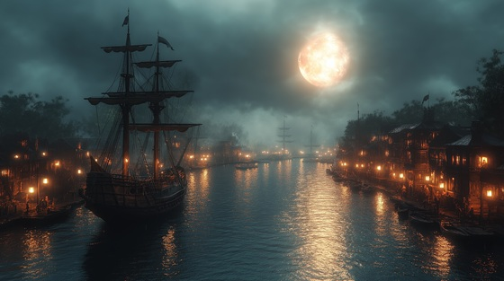

"The Harbor of Destiny" is inspired by the legendary voyages of Sinbad the Sailor. Before his incredible adventures across mystical seas, Sinbad first departs from a bustling harbor, guided by destiny and an unquenchable thirst for the unknown. This track captures the moment when the sailor leaves the safety of land, facing the infinite ocean with courage, curiosity, and a sense of fateful purpose. It’s a tale of beginnings, the call of adventure, and the storms that shape legends. Let the music carry you across the waves of myth and imagination.
The Harbor of Destiny
Fog rolls in over the moonlit pier,
Whispers of the sea only I can hear.
Masts creak, shadows twist and sway,
A restless tide calls me away.
Lanterns flicker, fate’s thread begins,
The journey waits, where legend spins.
Winds of fortune stir the sails,
A thousand tales in stormy gales.
Harbor of destiny, I heed your call,
Through storm and shadow, I will not fall.
Oceans of fire and waves of stone,
I sail the seas, yet never alone.
Salt on skin, the horizon bends,
Ancient echoes of journeys without end.
The dock dissolves beneath my feet,
The pulse of adventure, wild and fleet.
Ropes tighten, the rigging screams,
Prophecies linger in moonlit beams.
Wind and wave, the voyage begins,
In the heart of danger, fate grins.
Harbor of destiny, I heed your call,
Through storm and shadow, I will not fall.
Oceans of fire and waves of stone,
I sail the seas, yet never alone.
Seagulls vanish into the mist,
The compass spins, the stars insist.
A mariner’s courage, a dream untamed,
Through unseen currents, my soul is named.
Every port a whispered lore,
Every wave an open door.
The tide, it rises, the skies ignite,
A path unseen in the dying light.
Fate is a storm I cannot flee,
The harbor fades, it births the sea.
Harbor of destiny, I heed your call,
Through storm and shadow, I will not fall.
Oceans of fire and waves of stone,
I sail the seas, yet never alone.
The ship departs, the bells still chime,
A journey eternal, beyond all time.
Destiny whispers through salt and spray,
And Sinbad sails into the fray.